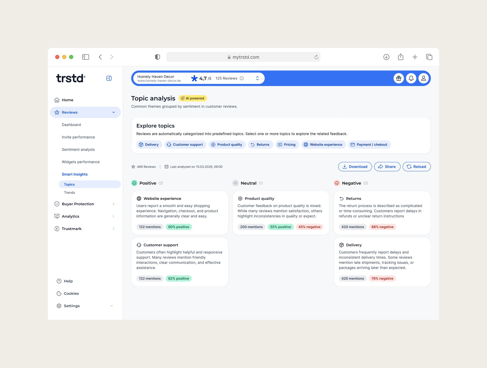
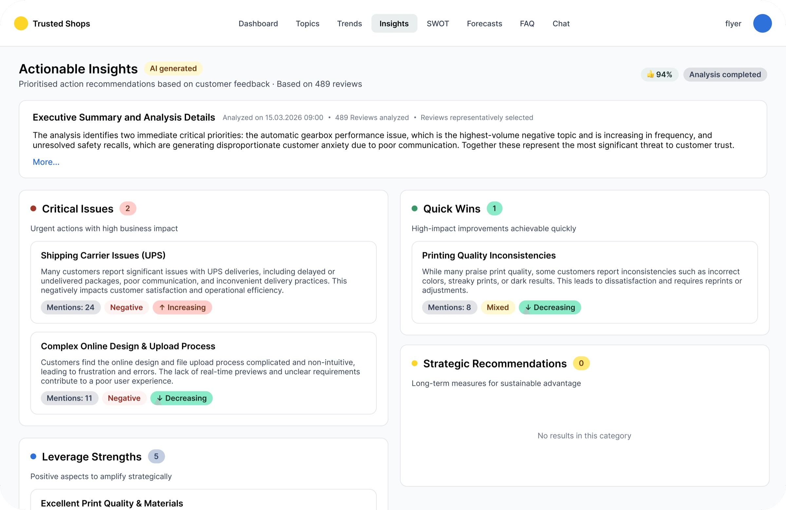
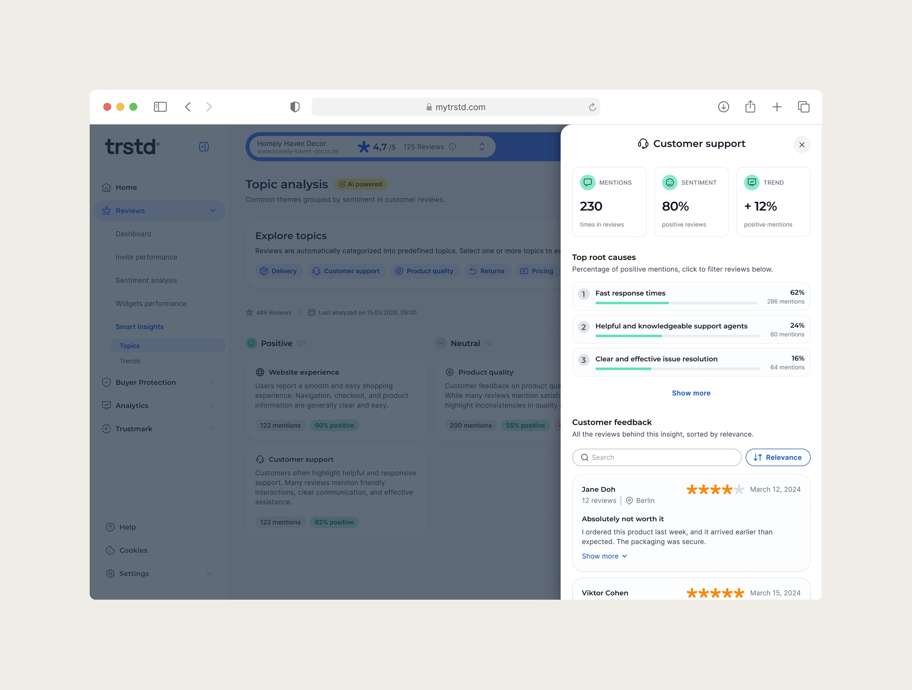
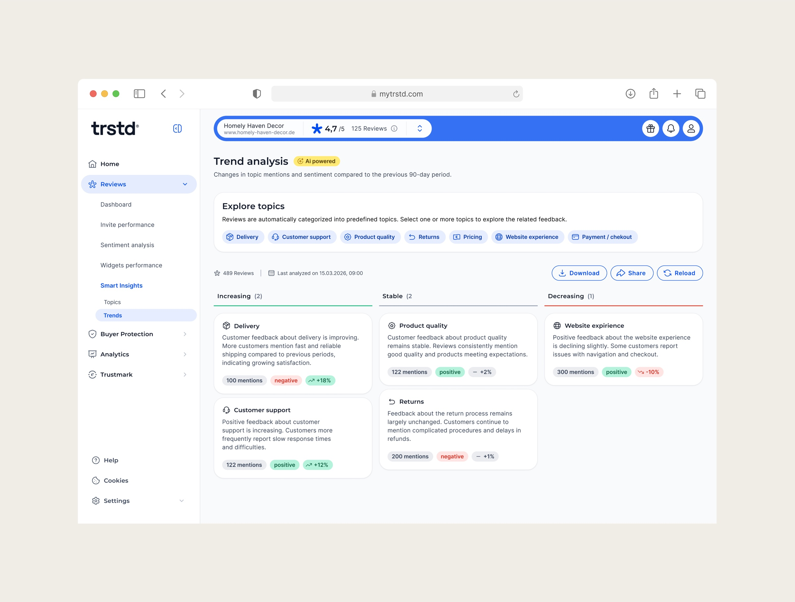

Turning review noise into decisions: the first paid AI product at Trusted Shops
Smart Insights is an AI add-on for Trusted Shops business customers. It transforms thousands of verified customer reviews into structured, decision-ready insights – without the manual reading businesses do today. Live in closed beta since March 2026; paid GA planned for June.
- Role
- Sole Product Designer · end-to-end
- Team
- PM, 3 engineers, data specialist, content designer
- Timeline
- Dec 2025 – Mar 2026
- Status
- Live in closed beta

10/12
Beta accounts returning weekly by end of week 4
8/12
Downloaded insights to share internally – the strongest product-market-fit signal
3.4
Topic drill-downs per session – exploration, not skimming
Problem
A huge data asset nobody was using – and a failed first attempt
Trusted Shops has ~3,156 high-volume customers collecting more than 1,000 verified reviews a year. That data mostly sat in the platform unused. The company had already tried once: a product called Sentiment Analysis reached just 6% of the addressable base in two years – the price was high and the value too abstract. A sentiment score dropping tells you something is wrong; it doesn't tell you what, or what to do.
Meanwhile sales kept hearing the same questions in renewal conversations, and leadership wanted proof that AI features could become a real revenue line – not just experiments. Smart Insights became the first paid AI add-on, replacing Sentiment Analysis.
How might we turn raw review data into clear, structured signals that businesses can use to make decisions?
Research
Four sources of evidence – and two assumptions that didn't survive
I interviewed the three customer roles that work with review data day-to-day, ran eight demo sessions on an early clickable prototype, shadowed managers preparing real reports for their leadership, and – together with engineering and our data specialist – ran the early LLM pipeline against three real customer datasets.
📊 Manual analysis doesn't scale
All three roles spent hours assembling a single report from raw reviews. But aggregate sentiment scores are too abstract to act on. There's a gap in the middle – that gap is the product.
📤 Insights must leave the platform
Brand managers rarely make the final decision – they prepare material for someone more senior. The output had to work outside the platform: download, forward, present.
❌ Invalidated: "Customers will love AI recommendations"
The most "obviously impressive" feature in the original scope produced initial enthusiasm, then pushback, then loss of trust in the rest of the analysis. We removed it from v1.
❌ Invalidated: "AI-generated topics beat fixed categories"
Run the LLM three times on the same data and "Delivery" becomes "Shipping" becomes "Logistics". Fine for one-off analysis; structurally broken for tracking over time. We chose a fixed topic registry the AI classifies into.
Success
Twelve customers is a signal, not a statistic
The beta cohort was small, so we treated the phase as directional. Instead of pre-defining quantitative targets, the PM and I agreed on four questions whose answers would tell us whether to move toward paid GA or keep iterating.
Question
Did customers find the feature? – % of beta accounts opening Smart Insights in week 1
Question
Did they go deep, or just glance? – average topic drill-downs per session
Question
Did insights leave the platform? – share and export events, reports forwarded internally
Question
Did they come back? – % of accounts returning weekly after week 4
Design
A prototype in days, then four decisions about where not to use AI
Several customer meetings were already scheduled for unrelated topics, and I didn't want to lose that window. To have something testable in days rather than weeks, I generated a clickable concept with Figma AI (Claude and external LLMs weren't yet internally approved on data-security grounds). The prototype was rough but concrete – it turned vague "what do you think of AI analytics" questions into specific reactions, and surfaced most of the project's critical findings.

Five decisions shaped the product more than anything else – several of them about restraint:
01
Less data on the surface. The first prototype showed everything at once: sentiment breakdowns, mention counts, trend percentages. Customers got overwhelmed and missed the signal. The shipped product leads with topics and lets people drill down.
02
No AI recommendations. The invalidated assumption, acted on: we removed the feature that eroded trust in everything else.
03
A fixed topic registry. Stable categories the AI classifies into – same labels on every run, so time-based analysis holds.
04
Sharing first. The product assumes insights leave the platform: PDF export today, role-aware shareable links in v2.
05
Cut custom date filtering. Customers asked for it, engineering flagged it as heavy – it moved out of v1 scope.
Once these were validated on the prototype, I moved to production design in Figma: component library, edge cases, empty states, error handling, and a visual language consistent with the trstd platform.

Outcome
Beta validated the hypothesis – and corrected one more assumption
Launched in closed beta in March 2026 with 12 customers: 11 opened the module in week 1 (10 organically), 10 were returning weekly by the end of week 4, and 8 downloaded insights to share internally – the clearest sign the product does its real job of feeding decisions.
One assumption was invalidated only after launch. I expected Topics to be the primary view and Trends secondary – the opposite emerged. Topics works as the entry point, but Trends is what customers show their leadership in quarterly reviews. That's where the decisions actually happen.
Next: multi-source ingestion (Google, Trustpilot, Amazon reviews) as the v3 priority, and pricing validation ahead of paid GA – the free beta likely undersold the product.
I expected the design challenge to be the AI experience. The work that mattered most was the opposite: removing AI from the places where it weakens trust.

Next project